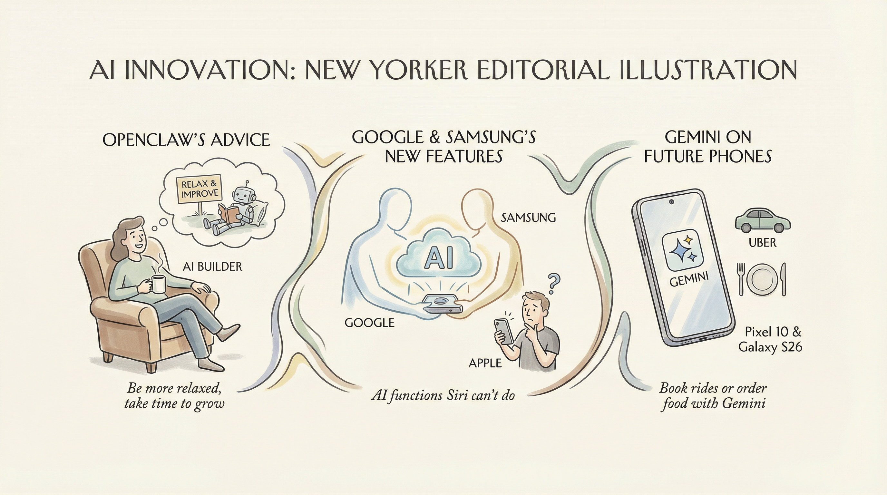

谷歌将Alphabet的AI机器人项目Intrinsic整合进公司，加大物理AI投入。
两克伴AIGC日报
2026-02-26 星期四

本期关注：谷歌整合AI机器人项目、英伟达展示物理AI未来，DeepSeek突破LLM推理存储瓶颈，百度AI业务收入占比43%超预期，Anthropic收购Vercept并合作金融AI代理，AI在物理世界、企业服务及技术研发领域加速落地。
📰 行业动态
Anthropic收购了计算机使用AI初创公司Vercept，以应对Meta挖角其创始人。
Gushwork通过AI搜索工具获得客户，种子轮融资达900万美元。
英伟达展示自动驾驶汽车、机器人和AI代理的未来，物理AI已到来。
Intuit与Anthropic合作，为消费者和企业提供可信的金融情报和定制AI代理。
🔥 今日焦点
近日，北京大学、清华大学与DeepSeek-AI联合研究团队在大型语言模型（LLM）推理架构优化方面取得突破性进展。该团队成功研发了一种名为**DualPath**的新型推理系统，旨在解决在代理工作负载下KV-Cache存储I/O带宽的技术瓶颈。
DualPath系统通过创新的双路径架构，实现了对存储带宽瓶颈的有效突破。该系统在保持原有推理性能的同时，显著提升了LLM的推理效率，为AI领域带来了新的可能性。
百度2025年第四季度财报显示，AI业务收入占比高达43%，超出市场预期。2025年，百度总营收1291亿元，其中AI业务营收400亿元。AI云业务势头强劲，全年收入同比增长34%，高性能计算设施订阅收入同比增长143%。AI原生营销服务全年收入同比增长301%，百度App月活用户数达6.79亿，文心助手月活用户数达2.02亿。AI应用全年收入突破100亿元，萝卜快跑全球无人驾驶出行服务次数达340万，同比增长超200%。百度AI业务的强劲表现，标志着AI已成为百度新核心，对AI领域发展具有重要影响。
---
谷歌近日发布了名为“豆包手机”的智能助手，其GUI操作实现跨App代办功能，进一步强化了安卓系统的智能性。该助手可通过长按侧键在系统层面唤醒，自动完成多步骤操作，用户在执行过程中仍可继续使用手机，并可通过通知栏实时查看进度、介入或停止任务。这一功能的推出，标志着安卓系统正从传统操作系统向“真正理解并为你服务的智能系统”转变。
“豆包手机”助手的部分任务执行能力由GUI方案实现，这意味着AI技术正逐渐从幕后走向台前，为用户提供更加直观、便捷的服务。此举对AI领域具有重要意义，一方面，它展示了AI技术在智能助手领域的应用潜力；另一方面，它也推动了AI与用户交互方式的革新。
📚 深度长文
本文深入探讨了Google API Key的安全性漏洞，揭示了Gemini平台在API Key管理上的重大变革。文章指出，Google Maps等服务的API Key虽然设计为公开，但Gemini的API Key却可以访问私有文件和进行计费请求，因此不应共享。作者强调，由于开发者可能无意中在公开的API Key上启用Gemini计费，这构成了权限提升而非配置错误。文章通过详细分析事件序列，揭示了API Key管理的复杂性，为AI从业者提供了宝贵的经验和启示。阅读本文，有助于深入理解API Key的安全性风险，以及如何有效防范类似漏洞。
---
本文探讨了OpenAI在人工智能领域的竞争策略。作者Benedict Evans指出，尽管OpenAI的模型功能强大，但用户对模型的应用场景有限，导致“能力差距”问题。他认为，OpenAI的广告项目不仅是为了覆盖不付费用户的成本，更是为了提高用户对最新、最强大的模型的接触机会，以期增强用户粘性。文章深入分析了OpenAI的产品与市场匹配度问题，并提出了针对性的策略建议，对AI从业者具有重要的参考价值。
📄 重点论文
**核心贡献**: 提出了一种名为PANGAEA-GPT的分层多智能体框架，用于自主数据发现和分析，旨在解决地球科学数据积累带来的可扩展性挑战。
**与AI Agent的关联**: 该研究对于多智能体系统在数据发现和分析中的应用具有实际价值，有助于提高数据重用性。
**核心贡献**: 提出了一种基于场理论的记忆系统，将存储信息视为由偏微分方程控制的连续场，以实现上下文的连续动态保持。
**与AI Agent的关联**: 该研究为AI智能体提供了新的记忆机制，有助于提高智能体在多智能体场景中的交互能力。
**核心贡献**: 提出了一种名为Tool-R0的自主LLM智能体，能够从零数据学习工具，为LLM在工具使用方面的研究提供了新的思路。
**与AI Agent的关联**: 该研究有助于推动LLM在工具使用和复杂任务解决方面的应用，对AI Agent领域具有实际价值。
🛠️ 产品推荐
Show HN: Ship or Slop 是一款AI辅助的项目展示平台，旨在为技术从业者提供一个无压力的分享空间。用户可通过AI代理提交项目，并由人类评审团进行公正评价。该平台旨在解决技术爱好者在展示项目时面临的“是否值得展示”的焦虑，鼓励大家坦诚分享，共同进步。平台的核心功能是AI代理提交和人类评审机制，为用户提供一个公正、开放的项目展示环境。
---
Agent Swarm是一款开源的多智能体自学习团队解决方案。该产品通过构建多智能体系统，实现智能体的自主学习和协作，从而完成复杂任务。其核心功能包括智能体间的信息共享、任务分配和协同决策。Agent Swarm凭借其先进的AI能力，能够有效解决传统团队协作中的沟通不畅、效率低下等问题，为用户提供高效、智能的团队协作解决方案。
---
Show HN：这款由AI构建的工具箱，旨在为开发者提供便捷的编程辅助。它集成了架构设计、基础设施、CI/CD等功能，用户只需进行指导和审查，即可快速完成开发任务。工具箱包含JSON格式化、图片缩放、时间转换、UUID生成、二维码生成等30余种实用工具，极大提高了开发效率。其核心优势在于AI的智能辅助，让开发者从繁琐的代码编写中解放出来，专注于创新和优化。